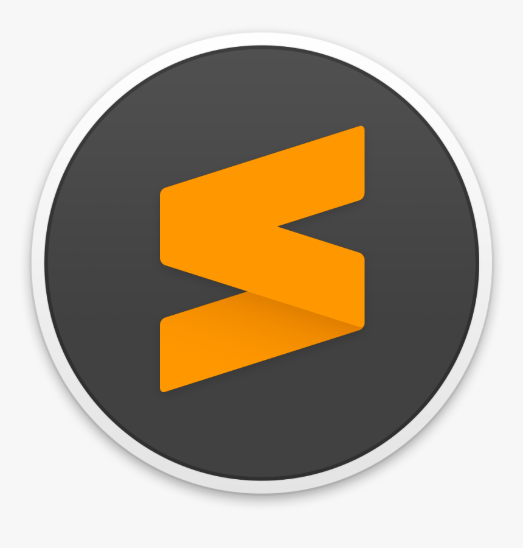

SUBLIME TEXT 3: Sublime Text é um editor de código HTML. O programa tem interface com diferentes cores para facilitar a compreensão e construção dos códigos, ao contrário de editores de linguagem de programação que costumam ser complicados, principalmente para usuários iniciantes.
ATOM: Atom é um editor de texto de código aberto disponível para as plataformas Linux, macOS e Microsoft Windows, desenvolvido pelo GitHub sob a licença MIT. A ferramenta foi criada usando Electron e tecnologias web como HTML, JavaScript e CSS. Permite a instalação de extensões ("packages") desenvolvidos com Node. js.

Visual Studio Code (VS Code): é um editor de código de código aberto desenvolvido pela Microsoft. A saber, ele está disponível para Windows, Mac e Linux. É criado com Electron, ferramenta criada pelo GitHub que permite a criação de softwares Desktop com HTML, CSS e JavaScript.